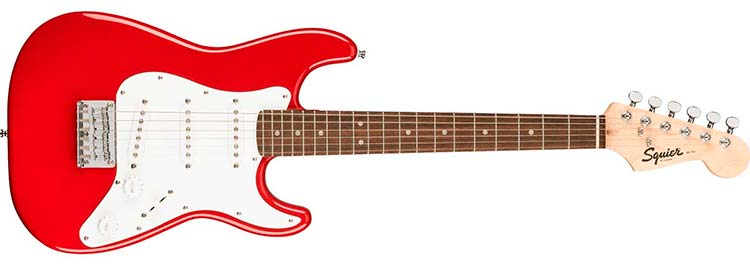
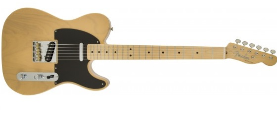
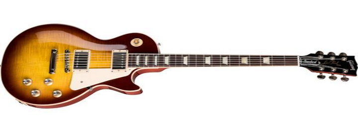
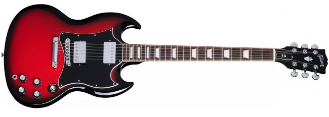
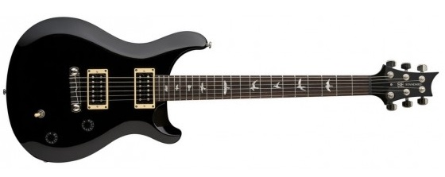

Base modelo Stratocaster
Clasico modelo fundacional del Rock. Con sonido brillante y gran ataque.

Base modelo Telecaster
La fundadora de la legendaria marca Fender destaca por su fidelidad y sencillez.

Base modelo Les Paul
También icónico modelo fundacional del rock, de sonido mas cálido y mayor sustain.

Base modelo SG
Destinada a ser la sucesora de la Les Paul esta guitarra destaca por su sonido de gran ataque sin dejar de lado la calidez.

Base modelo PRS
Híbrido entre Strato y Les Paul esta guitarra posee la ventajas de ambos modelos siendo una excelente opción para gran variedad de propositos.